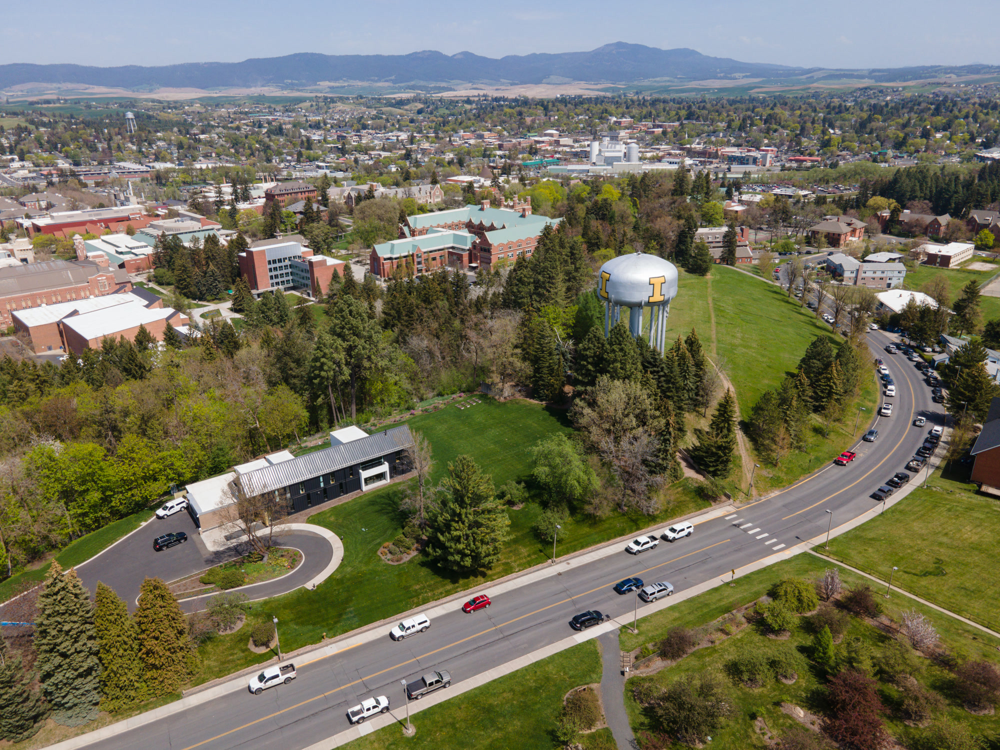

Moscow, Idaho
The Classical Christian Capital — Where Reformed Faith, Education, and Palouse Beauty Converge

Overview
Moscow, Idaho is a small university town of ~27,500 in the Palouse region. What makes it extraordinary for Reformed Christian families is the unparalleled ecosystem built around Christ Church and Douglas Wilson. With ~3,000 congregants across four CREC churches, Logos School (founded 1981, 686 students -- the school that launched the classical Christian education movement), New Saint Andrews College, and Greyfriars Hall seminary, Moscow offers a depth of Reformed community virtually unmatched in the US.
The cost of living hovers near the national average with a buyer's market ($456K median). Horse property is available in Latah County ($10K-$17K/acre). Idaho's 5.3% flat income tax and 6% sales tax keep things moderate. Moscow's lifestyle blends small-town charm with outdoor recreation -- Moscow Mountain hiking, hunting, and the famous Saturday Farmers Market. Winters are real (52 inches snow). Families should know Moscow exists in creative tension between a progressive university town (U of I) and a growing conservative Christian movement.
Scores
How Moscow ranks across all six evaluation categories (1-10 scale). Weighted overall: 8.1 / 10.
Cost of Living
Overall index 103 -- near the national average, making Moscow one of the more affordable options in the comparison set.
| Category | Index | Notes |
|---|---|---|
| Overall | 103 | 3% above national average |
| Housing | 110 | Moderate; buyer's market conditions |
| Transportation | 105 | Car-dependent small town |
| Groceries | 101 | Near national average |
| Utilities | 95 | Below national average |
Flat rate on all income
State rate, no local additions
Below national median; university town wages
Moscow's cost of living sits just 3% above the national average -- substantially more affordable than Coeur d'Alene (115) or Bend (128). Idaho's flat 5.3% income tax is moderate, and very low property tax rates (similar to the rest of Idaho at 0.32-0.63%) are a real advantage. The 6% sales tax has no local additions. The median household income of $62,006 reflects the university-town economy (U of I is the largest employer), which keeps wages lower but also keeps housing prices in check. Remote workers earning coastal salaries will find Moscow very comfortable financially.
Housing and Land
Median home price $456K -- affordable for Idaho with a buyer's market and horse property available in Latah County.
Buyer's market conditions
Horse property available
| Area | Price Range | Family Rating | Notes |
|---|---|---|---|
| Moscow (in town) | $400K-$550K | Good | Walking distance to Logos School, NSA, downtown; university town feel |
| Moscow (rural outskirts) | $350K-$600K+ | Excellent | Acreage properties, horse-friendly, Palouse views |
| Troy / Deary | $250K-$400K | Good | Small towns east of Moscow; most affordable, very rural |
| Pullman, WA | $375K-$500K | Good | 8 miles west (WSU); Washington state taxes apply but more inventory |
Land and Acreage
Latah County offers excellent land value at $10K-$17K per acre -- a fraction of what Kootenai County (Coeur d'Alene) commands. The rolling Palouse hills surrounding Moscow provide scenic acreage for equestrian families, with Idaho's permissive agricultural zoning allowing livestock without special permits. Properties south and east of town tend to offer the best combination of acreage, privacy, and proximity to the Christ Church/Logos School community. The buyer's market means negotiating power favors families looking to purchase.
Education
Score: 9/10 -- Logos School (THE original ACCS school), New Saint Andrews College, and the birthplace of the classical Christian education movement.
Classical Christian Schools
| School | Grades | Students | Notes |
|---|---|---|---|
| Logos School | K-12 | 686 | Founded 1981 -- the school that launched the classical Christian education movement (ACCS). Doug Wilson was a founding board member. Hosts the largest ACCS teacher training event. The gold standard. |
| The Jubilee School | K-8 | -- | Smaller classical Christian option in the Moscow area. |
Higher Education
| Institution | Type | Notes |
|---|---|---|
| New Saint Andrews College (NSA) | Private classical Christian liberal arts | Founded 1994. Single integrated curriculum (Great Books tradition). Draws families nationally -- some relocate to Moscow specifically for NSA. |
| Greyfriars Hall | Pastoral apprenticeship/seminary | Produces future CREC pastors. Closely connected to Christ Church and NSA. |
| University of Idaho | State university (R1 research) | ~11,000 students. Idaho's flagship public university. Progressive campus culture creates the town's ideological tension. |
Homeschool Community
Idaho has some of the most permissive homeschool laws in the country -- no notification to the state is required, no curriculum approval, no standardized testing. Moscow's homeschool community benefits from proximity to Logos School's resources and the broader CREC educational ecosystem.
Notable Context
Moscow is not just a city with good classical Christian schools -- it is the city where the entire movement began. Logos School (1981) predates the formal ACCS organization and was the model that inspired hundreds of classical Christian schools across the country. For families who prioritize classical Christian education, there is no city with deeper roots or more institutional maturity in this space.
Public schools in Moscow School District 281 rate B+ with strong graduation rates, benefiting from the university town's educated population.
Faith
Score: 9/10 -- The densest Reformed Christian community in the comparison set, anchored by Christ Church and the CREC ecosystem.
| Church | Denomination | Size | Notes |
|---|---|---|---|
| Christ Church | CREC | ~3,000 | Flagship CREC congregation. Douglas Wilson, pastor. The anchor institution of Moscow's entire Christian ecosystem. ~5% of the city's population. |
| Trinity Reformed Church | CREC | Medium | Second CREC congregation in Moscow. Closely connected to Christ Church network. |
| King's Cross Church | CREC | Small-Medium | CREC congregation serving the Moscow-Pullman area. |
| Emmanuel Reformed Church | CREC | Small | Part of the Moscow CREC network. |
| Palouse Fellowship | CREC | Small | CREC church serving the broader Palouse region. |
Moscow's Reformed church presence is extraordinary by any measure. With ~3,000 congregants across five CREC churches in a city of 27,500, roughly 10% of Moscow's population is part of a Reformed congregation. This density is virtually unmatched anywhere in the United States. Christ Church under Douglas Wilson is the gravitational center -- not just for Moscow but for the CREC denomination nationally (130+ churches in 40 states and 25+ countries).
The CREC churches are postmillennial, Kuyperian, and complementarian. They share a vision of cultural engagement that extends beyond Sunday worship into education (Logos School, NSA), publishing (Canon Press), media (Blog & Mablog podcast), and civic life. For families seeking deep Reformed community where faith permeates daily life -- not just church attendance -- Moscow is in a category by itself.
Families should note that the Reformed options in Moscow are exclusively CREC. There are no PCA, OPC, or other confessional Reformed congregations in town. If you are specifically seeking Westminster Standards Presbyterianism outside the Wilson orbit, Moscow does not currently offer that. The broader evangelical and mainline options include community churches, an LCMS Lutheran congregation, and Catholic parishes.
Lifestyle
Score: 7/10 -- Small-town Palouse charm, solid outdoor recreation, real winters, and a unique cultural dynamic.
Climate
| Season | High | Low | Character |
|---|---|---|---|
| Spring | 58F | 36F | Cool, gradual warming, green Palouse hills |
| Summer | 84F | 53F | Warm, dry, long daylight, golden wheat fields |
| Fall | 56F | 35F | Crisp, harvest season, stunning rolling hills |
| Winter | 34F | 22F | Cold, snowy (52 inches annually) |
Real winters with consistent snow
Annual days of sunshine
Everything is close in a small town
Outdoor Recreation
| Activity | Quality | Details |
|---|---|---|
| Hiking | 4/5 | Moscow Mountain, Idler's Rest, Kamiak Butte, Palouse Falls (90 min) |
| Hunting | 5/5 | Premier Idaho hunting: elk, deer, bear, upland birds in surrounding national forests |
| Fishing | 3/5 | Clearwater River (45 min), Dworshak Reservoir; no major lakes immediately local |
| Skiing | 3/5 | Schweitzer (3 hrs), Silver Mountain (3 hrs); no ski resort nearby |
| Equestrian | 4/5 | Excellent acreage availability, ag-zoned properties, national forest trail access |
Saturday Moscow Farmers Market -- one of Idaho's best, May through October
University arts/events, Canon Press community, Pullman/WSU 8 miles west
Community
Score: 8/10 -- An extraordinary depth of intentional Christian community in a small-town setting, with a notable ideological divide.
Metro area ~90,579
University town economy
Highest faith + education scores
| Factor | Rating |
|---|---|
| Family Friendliness | Excellent |
| Reformed Community Depth | Unmatched |
| Classical Education Access | Best in Nation |
| Small Town Feel | Yes |
| Ideological Tension | Significant |
Moscow's Christian community is built around a depth of institutional infrastructure that no other city in this comparison set can match. Christ Church, Logos School, New Saint Andrews College, Canon Press, and Greyfriars Hall form an integrated ecosystem where Reformed faith touches education, publishing, media, business, and civic life. Families who join this community gain access to a thick social fabric -- church, school, college, seminary, and commercial life all interconnected.
The unique dynamic families must understand is the town's ideological split. The University of Idaho brings a progressive, secular campus culture. The CREC community represents a growing conservative Christian movement. These two worlds coexist in a town of 27,500, creating a level of cultural tension that is unusual for a small Idaho town. The Saturday Farmers Market is a microcosm -- you'll find both communities shopping side by side.
Pullman, Washington (home of Washington State University) is 8 miles west, forming a combined metro of ~90,000. The Lewiston-Clarkston valley is 30 miles south for additional retail and healthcare. Moscow is genuinely remote -- Spokane is 85 miles north, Boise is 300 miles south. Families should be comfortable with small-town living and plan accordingly for travel, healthcare, and amenities.
Pros and Cons
Advantages
- Deepest Reformed Christian community in the comparison set: ~3,000 CREC congregants, five churches, all in a town of 27,500
- Logos School -- THE original classical Christian school (founded 1981, 686 students), birthplace of the ACCS movement
- New Saint Andrews College and Greyfriars Hall provide college and seminary options within the community
- Cost of living near national average (index 103) -- far more affordable than CDA, Bend, or Sarasota
- Horse property available at $10K-$17K/acre in Latah County -- excellent land value
- Idaho's very low property taxes (0.32-0.63%) and no local sales tax additions
- Small-town charm with famous Saturday Farmers Market, Moscow Mountain hiking, and premier hunting access
- Integrated faith ecosystem: church, school, college, publishing, and commerce all interconnected
Disadvantages
- All Reformed churches are CREC -- no PCA, OPC, or other confessional Reformed options in town
- Significant ideological tension between progressive university culture (U of I) and conservative Christian movement
- Genuinely remote: Spokane 85 miles north, Boise 300 miles south, limited airline access
- Real winters: 52 inches of snow, lows in the 20s, only 169 sunny days
- Median household income of $62,006 is below national median -- university town wages
- Small metro area (~90K) means limited healthcare, retail, and cultural amenities
- 5.3% flat income tax is moderate -- worse than Tennessee (0%) and Florida (0%)
- The Wilson/CREC community is influential but polarizing -- families should understand the dynamics before committing
External Links
| Resource | Link |
|---|---|
| City of Moscow | ci.moscow.id.us |
| Christ Church | christkirk.com |
| Logos School | logosschool.com |
| New Saint Andrews College | nsa.edu |
| Canon Press | canonpress.com |
| Moscow Chamber of Commerce | moscowchamber.com |
| Latah County | latah.id.us |
| Moscow School District 281 | msd281.org |